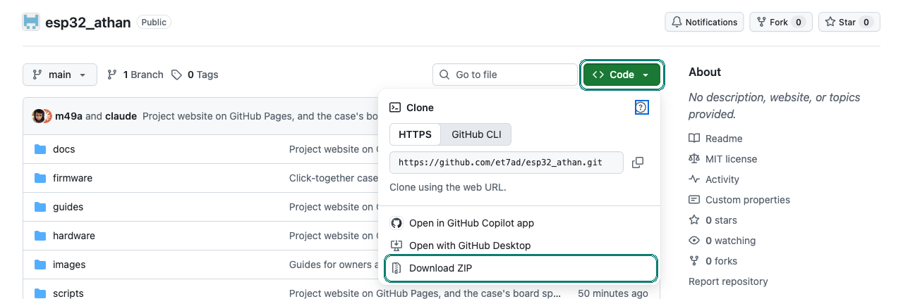

Your own mosque data
Clocks read their mosques, prayer times, sounds and radio stations from this project's
docs/ folder on GitHub. A community that wants to run its own list can host the same files
anywhere and build the firmware to read from there.
Most people don't need this. To get your mosque onto every clock, just ask for it: it shows up by itself, with no firmware change. Host your own data when you want your own mosques, sounds and stations for your own clocks, with nobody else in the loop.
1A home for the files
The easiest home is your own copy of this repository on GitHub: press Fork on
the project's page. Your copy has the same
docs/ folder, and GitHub serves it to your clocks at
https://raw.githubusercontent.com/you/esp32_athan/main/docs. The project is MIT licensed:
you may copy it, change it and share it.

Any other web server works too, as long as the clock can reach it: an https:// address with a
certificate from a common authority (the clock checks it), or a plain http:// address, for
example a computer on your own network.
2The files the clock reads
Keep this arrangement exactly: the clock builds every address from the folder you give it.
athantimes/mosques.json
One entry per mosque, by its key: lowercase letters, digits and _, at most 31, the same
as its folder's name. Clocks store the key; owners only ever see the name (plain ASCII, at most 40
characters).
{
"v": 1,
"mosques": {
"mymasjid": {"name": "My Masjid", "lat": 38.546506, "lon": -121.756307,
"tz": "PST8PDT,M3.2.0,M11.1.0", "doha_after_sunrise": 20}
}
}tzis a POSIX time zone (PST8PDT,M3.2.0,M11.1.0, notAmerica/Los_Angeles).latandlonas a map shows them (right-click the building in Google Maps)."active": falsetakes a mosque off the list without deleting it.
athantimes/<key>/<year>.json
A whole year: every day's twelve times, in 24-hour HH:MM, in this order. At most 100 KB.
{"v":1,"location":"mymasjid","year":2027,"tz":"PST8PDT,M3.2.0,M11.1.0",
"fields":["fajr","fajr_iqa","sunrise","doha","dhuhar","dhuhar_iqa","asr","asr_iqa","maghrib","maghrib_iqa","isha","isha_iqa"],
"days":[
["06:06","06:31","07:24","07:44","12:14","12:24","14:39","14:49","16:57","17:12","18:16","18:31"],
... one row for each day of the year
]}The format in full, with every check the clock makes.
audio/catalog.json
Four lists of {name, url}. Entry 1 of each is what a new clock downloads. Names: plain ASCII,
at most 12 characters. Each file is an MP3 within the clock's limits (3 MB and 5 minutes, a tick 0.4 MB
and 1 minute), mono.
{
"v": 1,
"athan": [{"name": "Athan 1", "url": "athan/01.mp3"}],
"fajr": [{"name": "Fajr 1", "url": "fajr/01.mp3"}],
"tawashih": [{"name": "Ya Rabbi", "url": "tawashih/01.mp3"}],
"tick": [{"name": "Tick 1", "url": "tick/01.mp3"}]
}radio/stations.json
Exactly ten {name, url}; slot k on a clock plays entry k. An empty
url leaves that slot empty.
{"v": 1, "stations": [
{"name": "Cairo Quran", "url": "https://radio.xecod.com/station/quran-cairo"},
... ten in all
]}The project's own copies, to start from: mosques.json, catalog.json, stations.json.
3Making the yearly files
The scripts in scripts/ turn a mosque's timetable into its yearly file, and refuse a year the clock would refuse (times out of order, a missing day, a bad time zone):
| Your timetable | Script |
|---|---|
| A table (a spreadsheet saved as a JSON list of rows) | python3 scripts/source_to_yearly.py --key mymasjid table.json |
| IslamicFinder's yearly page, saved as HTML | python3 scripts/parse_Islamicfinder/parse_islamicfinder_yearly.py --key mymasjid page.html |
| The MCA Santa Clara PDF | python3 scripts/santaclara_prayer_times_parser.py --key mymasjid timetable.pdf |
Then check everything under docs/ the way the clock would:
firmware/tests/run_tests.sh
It also checks that the default mosque in the firmware (step 4) is in your list. More on the scripts: prayer times.
4Point the firmware at your files
A clock reads only the address built into its firmware, so your clocks need a build of their own. In firmware/athan.yaml, change four lines:
substitutions: # where your docs/ folder is data_url: "https://raw.githubusercontent.com/you/esp32_athan/main/docs" # where your firmware updates are (step 6) update_manifest: "https://github.com/you/esp32_athan/releases/latest/download/manifest${variant_suffix}.json" globals: - {id: selected_location_key, type: std::string, initial_value: '"mymasjid"', ...} # a new clock's mosque select: - name: "Location" options: ["mymasjid"] # the same key
Change update_manifest too. A clock that still looks for the project's
updates would install the project's firmware, which reads the project's data again.
Everything else stays as it is. Your encryption key, if you made one, goes in the api: and
ota: sections as for any build.
5Build and flash
Build it as on the build page, with --display tft for the
colour screen:
./build_firmware.sh --display tft flash # a new board, through J6 ./build_firmware.sh --display tft ota athan.local # a clock already on your Wi-Fi
- A clock already running keeps its settings, sounds and Wi-Fi. Choose its mosque again from your list (menu: Location), since the one it had may not be in it.
- Your build's files land in
firmware/binaries/; the factory file can also be flashed with ESPHome Web.
6Your own updates
Your clocks look for updates at the update_manifest address. To offer one, raise
project_version, build, and attach the update file and its manifest to a GitHub Release in
your copy, marked as the latest:
firmware releases, step by step.
New mosques, years, sounds and stations need no update at all: change the files, and the clocks pick them up (the mosque list and stations within 6 hours, a new year in December).
This website comes along with a fork, in docs/. Turn on GitHub Pages for
your copy (Settings, Pages, branch main, folder /docs) and change
REPO at the top of docs/assets/site.js to your copy, so its pictures and guides
load from there.
Questions? Ask for help.